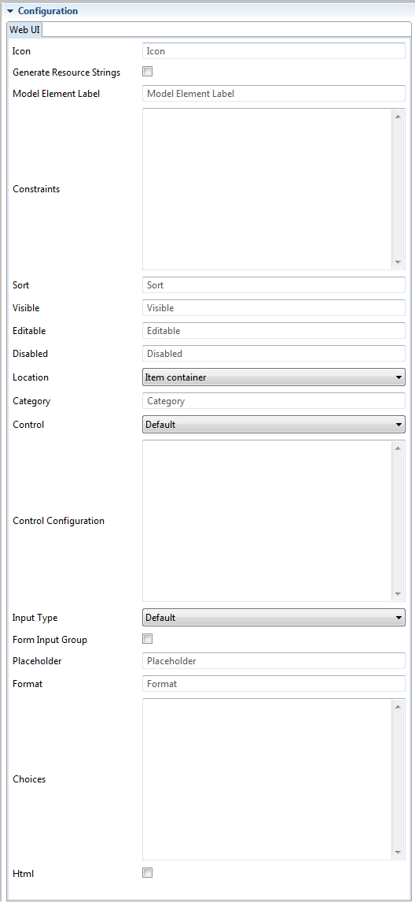

Icon for a model element such as EClass or EStructuralFeature.
If icon contains
/ it is treated as URL, otherwise it is treated as css class, e.g. Bootstrap's
glyphicon glyphicon-close.
If set to true, the generator generates resource strings in resource bundles properties files. Resource strings are generated from model annotations and using default values if annotations are not present.
Generation of resource strings simplifies localization. It does not alter the application behavior for default locale.
EClass or EStructuralFeature label.
Constraint shall be a YML text which defines a single constraint or a list of constraints. Constraint can be a string or a map containing:
condition - XPath expression boolean expression.
errorMessageKey - Optional error message key. If it is present, error message is retrieved as resource string.
errorMessage - Error message to display if the expression evaluates to false. It is used if
errorMessageKey is not defined or if there is no resource string for the key.
If the constraint is a String, then it is treated as
condition XPath expression and error message is constructed as
Constraint violation: <condition>.
XPath expression to use for sorting of items in tables and lists.
Defines whether the feature is visible in the object view. The value can be one of the following:
true boolean literal - the feature is visible.
false boolean literal - the feature is hidden.
true (compared with
Boolean.TRUE), then the feature is visible.
Defines whether the feature is editabe if it is already visible. The value can be one of the following:
isItem() returns false)
true boolean literal - the feature is editable
false boolean literal - the feature is not editable.
true (compared with
Boolean.TRUE), then the feature is editable.
Defines whether an editable feature is disabled, i.e. it shall be displayed in the edit form, but the edit control shall be disabled.
false boolean literal or empty string - the feature is enabled (default).*
true boolean literal - the feature is disabled.
true (compared with
Boolean.TRUE), then the feature is disabled.
Format is used for rendering and parsing date and number feature values. SimpleDateFormat for dates, DecimalFormat for numbers.
Feature category. Categories are displayed as panels in the view and the left panel, and field sets in edit forms.
Features with a common prefix are auto-categorized if not explicitly categorized. E.g. features
databaseUser and
databasePassword will be auto-categorized under the category
Database with
labels
User and
Password respectively.
Edit form control type for the feature. Defaults to input for attributes and multi-value features and select for references.
YAML map with keys corresponding to control attribute names, and values being JXPath expressions evaluating to attribute values.
Input type if control is "Input".
Set it to true to force rendering of the form control in a {@link FormInputGroup} instead of {@link FormGroup} or
to false to force the opposite. If this annotation is not present then inputs with either icon (rendered on the left) or help icon (rendered on the right)
are rendered as form input groups.
XPath expression evaluating to the placeholder value for features. Placeholder value is an implicit application-specific value, different from the default value. For example, in hierarchical structures children may implicitly inherit parent feature value, unless it is explicitly set (overridden) in the child.
In the absence of feature value (null or blank string for strings) placeholder values are displayed in the view in a small {@link Well}.
Format is used for rendering and parsing date and number feature values. SimpleDateFormat for dates, DecimalFormat for numbers.
YAML map of values to labels or list if values and labels are the same.
If control is
textarea and
html is set to
true then the textarea is initialized with
TinyMCE editor.